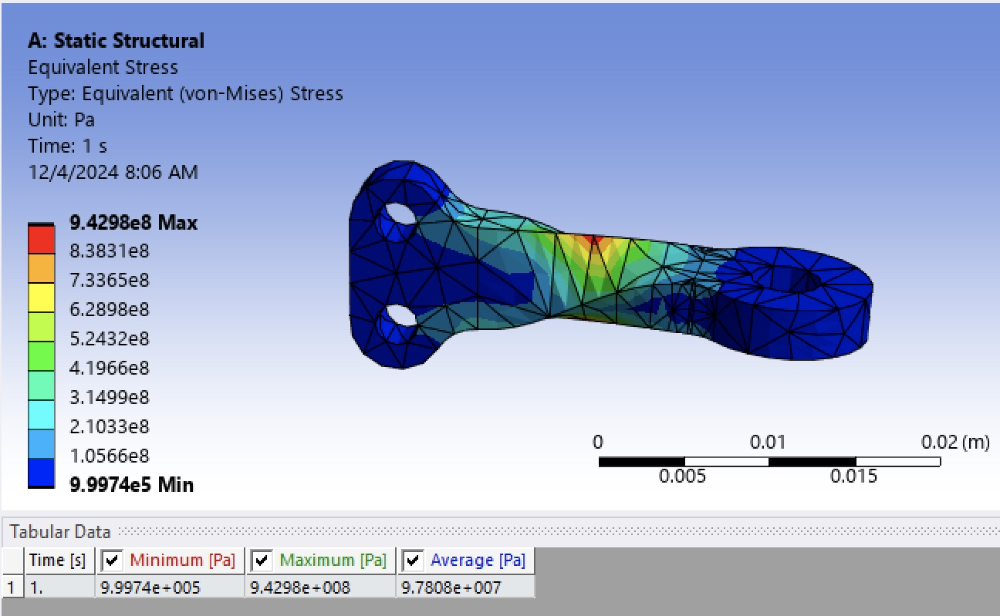

Hello! I am a dedicated Mechanical Engineering student at the University of California, San Diego, pursuing a minor in Data Science and scheduled to graduate in June 2025. I bring a solid foundation in mechanical systems, robotics, and data science, with robust hands-on experience in 3D modeling, CAD, CNC machining, and data analysis. Proficient in MATLAB, Python, ROS2, and Microsoft Office, I have led multiple engineering projects from concept to execution. My academic and practical experiences range from automotive mechanics to advanced manufacturing processes. In this portfolio, you will discover projects that showcase my skills in CAD modeling, data analysis, and software programming, illustrating my approach to integrating strong engineering principles with modern technology to drive innovation and solve complex problems. I am passionate about using my engineering expertise to contribute to meaningful, real-world projects, and I am committed to continuously enhancing my abilities in problem-solving, teamwork, technical communication, and project management. Dive into my work and see how I blend technical expertise with creative problem-solving to build the future of engineering. I am eager to learn more and adapt quickly, aiming to make a significant impact in my field.
Static Structural FEA Analysis